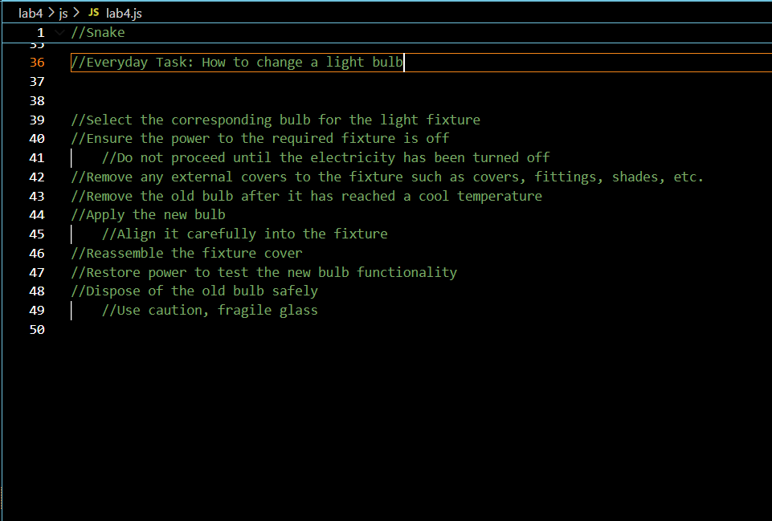
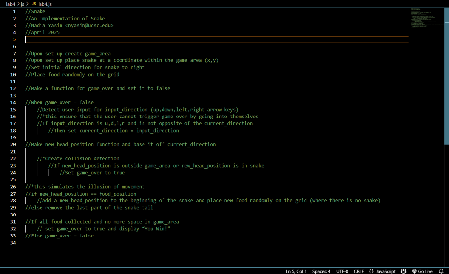
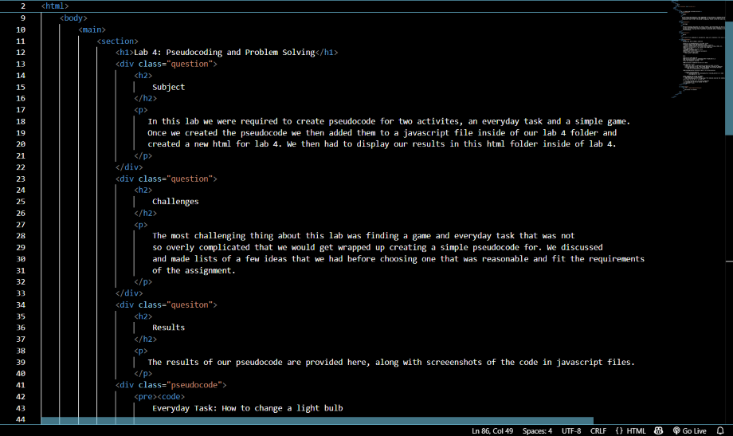

Lab 4: Pseudocoding and Problem Solving
Subject
In this lab we were required to create pseudocode for two activites, an everyday task and a simple game. Once we created the pseudocode we then added them to a javascript file inside of our lab 4 folder and created a new html for lab 4. We then had to display our results in this html folder inside of lab 4.
Challenges
The most challenging thing about this lab was finding a game and everyday task that was not so overly complicated that we would get wrapped up creating a simple pseudocode for. We discussed and made lists of a few ideas that we had before choosing one that was reasonable and fit the requirements of the assignment.
Results
The results of our pseudocode are provided here, along with screeenshots of the code in javascript files.
Everyday Task: How to change a light bulb
//Select the corresponding bulb for the light fixture
//Ensure the power to the required fixture is off
//Do not proceed until the electricity has been turned off
//Remove any external covers to the fixture such as covers, fittings, shades, etc.
//Remove the old bulb after it has reached a cool temperature
//Apply the new bulb
//Align it carefully into the fixture
//Reassemble the fixture cover
//Restore power to test the new bulb functionality
//Dispose of the old bulb safely
//Use caution, fragile glass
Snake:
//Upon set up create game_area
//Upon set up place snake at a coordinate within the game_area (x,y)
//Set initial_direction for snake to right
//Place food randomly on the grid
//Make a function for game_over and set it to false
//When game_over = false
//Detect user input for input_direction (up,down,left,right arrow keys)
//*this ensure that the user cannot trigger game_over by going into themselves
//If input_direction is u,d,l,r and is not opposite of the current_direction
//Then set current_direction = input_direction
//Make new_head_position function and base it off current_direction
//*Create collision detection
//If new_head_position is outside game_area or new_head_position is in snake
//Set game_over to true
//*this simulates the illusion of movement
//if new_head_position == food_position
//Add a new_head_position to the beginning of the snake and place new food randomly on the grid (where there is no snake)
//else remove the last part of the snake tail
//If all food collected and no more space in game_area
// set game_over to true and display “You Win!”
//Else game_over = false
These are the comments for the everyday task in a javascript file.
These are the comments for the game snake in a javascript file.
This is a screenshot of a piece of the html for this page.
